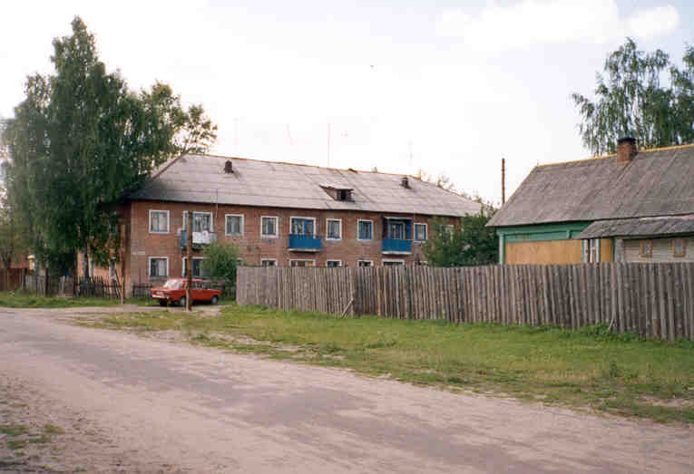
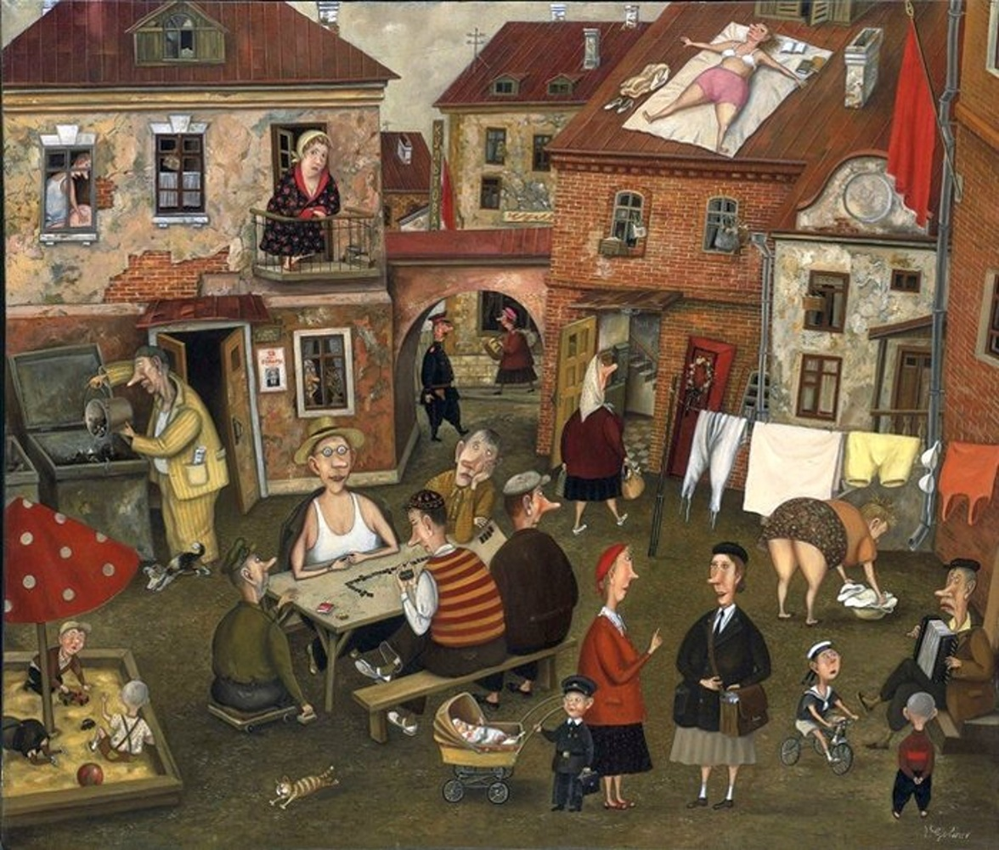

|
 Дом моей юности.  Валентин Губарев — белорусский художник, наделенный яркой индивидуальностью и особым, небанальным видением мира.Как это не парадоксально, но темы, сюжеты, образы для своих произведений он выбирает именно банальные, подчеркнуто обыденные в своей повседневности и простоте. Сила его искусства в том, что все эти немудреные сюжеты,примелькавшиеся лица, прозаичные до убогости предметы преображаются художником в увлекательнейшие картины-события. Их можно подолгу рассматривать, проникая все глубже и глубже в этот странный, казалось бы, такой знакомый и в тоже время совсем незнакомый мир . Примерно в таком дворе провёл свою юность и я. Больше всего я играл во дворе в шахматы с мужиками, постоянно их обыгрывая. Кроме шахмат и домино играли часто в карты и лото на деньги. В 15-16 лет я увлекался этими играми и велосипедом. Мои азартные победы в карты и лото нравились и молодым женщинам. На голубом глазу я заявлял, что кончил и уходил покупать леденцы на 11 копеек 100 грамм. После 16 лет мои замужние компаньонки по лото предлагали мне даже дать, но мне это тогда казалось лишним. В это время я начинал ходить на танцы и ухаживать за девочками из непонятного интереса. И что меня поразило, то это любое моё ухаживание оканчивалось объяснением мне в любви и даже согласием на сексуальный контакт. Наверно,жизнь была скудной и малейшее ухаживание голубоглазого энергичного мальчика вызывало у девочек такую естественную реакцию. Однако заводить детей мне не хотелось, а настоящей учительницей секса в эти мои ранние годы не встретил. |